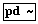
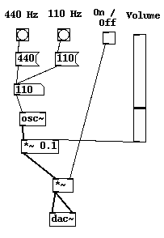

Pure Data
Archivierte Anleitung
Dieser Artikel wurde archiviert, da er - oder Teile daraus - nur noch unter einer älteren Ubuntu-Version nutzbar ist. Diese Anleitung wird vom Wiki-Team weder auf Richtigkeit überprüft noch anderweitig gepflegt. Zusätzlich wurde der Artikel für weitere Änderungen gesperrt.
Zum Verständnis dieses Artikels sind folgende Seiten hilfreich:

Pure Data  ist eine modular aufgebaute grafische Echtzeit-Entwicklungsumgebung, mit der man eigene Multimedia-Anwendungen wie Software-Synthesizer, Sequencer oder visuelle Effekte erstellen kann. Sie ist wegen ihrer Flexibilität vor allem in der Multimediakunst und bei Komponisten und Produzenten elektronischer Musik, insbesondere experimenteller Stilrichtungen, verbreitet. Programmierkenntnisse sind nicht erforderlich.
ist eine modular aufgebaute grafische Echtzeit-Entwicklungsumgebung, mit der man eigene Multimedia-Anwendungen wie Software-Synthesizer, Sequencer oder visuelle Effekte erstellen kann. Sie ist wegen ihrer Flexibilität vor allem in der Multimediakunst und bei Komponisten und Produzenten elektronischer Musik, insbesondere experimenteller Stilrichtungen, verbreitet. Programmierkenntnisse sind nicht erforderlich.
Pure Data verwendet eine "datenstromorientierte Programmiersprache": Signale verschiedenster Art, die von Eingängen (Audio- oder Videostreams, Bilder, Ausgaben anderer Programme...) stammen oder in Pure Data selbst erzeugt werden, können mit zahlreichen Funktionen manipuliert werden und werden dann zu einem Ausgang (z.B. Soundkarte, Monitor, TV-Out, MIDI-Geräte) geleitet. Zur Darstellung wird eine an verkabelten "Geräten" angelehnte Oberfläche genutzt, die Bedienung ähnelt also der von modularen Software-Synthesizern - wer mit Programmen wie Reaktor oder auch AlsaModularSynth Erfahrung hat, wird sich schnell zurechtfinden. Durch den großen Funktionsumfang, der beinahe der einer vollwertigen Programmiersprache entspricht, ist Pure Data jedoch deutlich flexibler. Sogar "intelligente" Anwendungen, die autonom eigene Kunstwerke kreieren, sind möglich.
Installation¶
Über die Paketverwaltung¶
Pure Data befindet sich in den offiziellen Ubuntu-Quellen und ist im Ubuntu-Studio-Paket enthalten.
Folgende Pakete müssen installiert [1] werden:
puredata (universe)
Weitere Pure-Data-Pakete in den Quellen:
pd-aubio (universe): Schnittstelle für Aubio, eine Sammlung von Samplebearbeitungs-Tools
pd-csound (universe): Schnittstelle für die Multimedia-Programmiersprache Csound
pd-zexy (universe): Audio-Objekte
pd-pdp (universe): Realtime-Videobearbeitung
gem (universe): Realtime-3D-Animationen (nutzt OpenGL), wird automatisch mit installiert
PD-Extended über Puredata.info¶
Für alle Ubuntu-Versionen gibt es fertige offizielle .deb-Pakete der Variante PD-Extended, die eine große Anzahl Erweiterungen mitbringt. Die Pakete sind auf einer Quellen-Seite des Community-Portals Puredata.info zu finden.
Start¶
Pure Data wird über das Anwendungsmenü im Abschnitt "Unterhaltungsmedien -> PureData" (bei PD-Extended "Multimedia -> Pd-extended") oder über ein Terminal mit
pd
gestartet. Wird der Start über das Terminal vorgenommen, kann die Konfiguration vieler Parameter über Kommandozeilenargumente vorgenommen werden. Diese werden mit
pd --help
aufgelistet.
Konfiguration¶
Beim Start erscheint zunächst das Hauptfenster, in dem wenige grundlegende Einstellungen vorgenommen werden können. Es muss zunächst das Soundsystem im Menü "Media" eingerichtet werden, dabei sind die Parameter weitgehend selbsterklärend. In den meisten Fällen ist die beste Wahl die Nutzung von JACK als Soundserver, in dessen Umgebung sich Pure Data problemlos eingliedern lässt.
Mit "Test Audio and Midi" im Menü "Media" kann man die Einstellungen testen. Vorher muss allerdings der Haken in "Compute Audio" im Hauptfenster gesetzt werden. Wenn es nicht klappt, liegt es häufig darin, dass in Jack Pure Data noch nicht mit den System- Ein- und Ausgängen verbunden ist. Dies regelt man am besten grafisch mit Qjackctl (als "Multimedia -> Jack Control" im Anwendungs-Menü verfügbar, sofern es installiert wurde).
Oberfläche und Konzeption¶
Pure Data bietet eine sehr schlichte grafische Oberfläche in Schwarz-Weiß. Alle Operationen werden in Kästen (Boxen) dargestellt, die je nach Kategorie eine andere Form aufweisen. Diese Boxen werden mit Hilfe von "Kabeln" miteinander verbunden. Es empfiehlt sich, zum Verständnis eines der Beispiel-Patches zu laden. Diese befinden sich im Verzeichnis /usr/lib/pd/doc/ in den beiden Unterverzeichnissen 2.control.examples/ und 3.audio.examples/.
Mit Strg + E schaltet man zwischen dem Bearbeitungsmodus (Edit Mode) und dem Ausführungsmodus (Execute Mode) hin und her.
Elemente¶
Je nach Funktionsweise gibt es vier verschiedene Typen von Boxen, zusätzlich gibt es mit "Comment" ( Strg + 5 ) eine Möglichkeit zum Kommentieren, grafische Kontrollelemente und Arrays. Die Boxen werden mittels der Unterpunkte des Menüs "Put" oder per Shortcut eingefügt, danach muss noch bei Objekten und Messages der Inhalt eingetragen werden.
Object-Boxen¶
Als "Object" bezeichnet man in Pure Data alle Funktionen, die einen bestimmten Befehl ausführen. Objekte sind beispielsweise Rechenoperationen, Oszillatoren, Filter, oder aber auch Ein- und Ausgänge. Man könnte sie mit Geräten in einem echten Studio vergleichen. Ein Object wird mit Strg + 1 eingefügt. Klickt man auf ein Objekt im Ausführungsmodus, so erhält man einen Hilfe-Patch (auf Englisch) dazu.
Objekte mit mehreren Eingängen behandeln diese grundsätzlich nicht gleichwertig. Während die Zahl oder das Symbol, das aus dem linken Eingang kommt, standardmäßig durchgeleitet wird, wird das rechte nur aktiviert, wenn der linke Eingang einen "Bang" erhält, ein universelles Aktivierungskommando. Daher bezeichnet man den linken Eingang stets als den "heißen" Eingang, den rechten als den "kalten".
Es gibt zwei Arten von Objekten: Kontrollobjekte und Audio-Objekte.
"Kontrollobjekte" eignen sich zum Durchführen von Berechnungen mit Kontrolldaten, also einzelnen Zahlen und anderen Werten. So sind beispielsweise Rechenoperationen, Steuerungsobjekte (Verteiler, Sender/Empfänger, Sortierfunktionen), Datenspeicher sowie MIDI-Ein- und Ausgänge typische Kontrollobjekte. Man erkennt sie daran, dass sie mit dünnen Kabeln untereinander verbunden sind.
Bei "Audioobjekten" (erkennbar an der Tilde ~ in der Box) wird dagegen ein Stream erzeugt oder manipuliert. Streams bestehen aus einer schnell wechselnden Zahlenfolge, beispielsweise den Samples eines Audiostreams. Alle Operationen in Audioobjekten werden daher grundsätzlich auf alle Zahlen des Streams angewandt und sind daher rechenaufwändig; die Belastung hängt dabei von Faktoren wie der Sample- und Bitrate ab. Zu den Audioobjekten gehören Oszillatoren, Filter, Ein- und Ausgänge, aber auch Rechenoperationen, die auf den gesamten Stream angewendet werden. So wird beispielsweise mit dem Multiplikator *~ die Lautstärke kontrolliert. Unter sich leiten die Audioobjekte Streams meist über den jeweils linken Eingang weiter; das "Kabel" das den Stream transportiert, ist durch seine größere Dicke zu erkennen. Zwei spezielle Audioobjekte sind Eingang ("adc~") und Ausgang ("dac~"), die man hinsichtlich der Zahl der Kanäle konfigurieren kann.
Stream-Ein- und Ausgänge können nicht mit Kontroll-Ein- und Ausgängen verknüpft werden. Viele Audioobjekte können aber über Kontrolleingänge (meist rechts) durch Kontrollobjekte gesteuert werden.
Message-Boxen¶
Messages sind festgelegte Nachrichten, die über ein Kabel geschickt werden. Es kann sich um Symbole, Nummern oder Befehle handeln. Sie werden mit Strg + 2 oder über das Put-Menü eingefügt.
Ein besonders wichtiger Befehl ist der "Bang". Dieser aktiviert dabei stets den rechten ("kalten") Eingang eines Objektes und gibt somit den Rhythmus vor, in dem die Daten manipuliert werden.
Number- und Symbol-Boxen¶
Numbers ( Strg + 3 ) dienen der Kontrolle der Daten, die gerade über ein Datenkabel geschickt werden. So gibt beispielsweise eine hinter einen Slider geschaltete Number-Box den numerischen Wert aus. Auf der anderen Seite können Numbers auch aktiv geändert werden. Bei über der Number-Box gedrückter linker Maustaste wird der Wert erhöht oder erniedrigt, je nachdem ob die Maus nach oben oder unten gefahren wird.
Symbols ( Strg + 4 ) funktionieren ähnlich, beinhalten aber Zeichenketten. Sie sind daher für reine Audioanwendungen weniger wichtig als beispielsweise für Videokunst.
Grafische Kontrollelemente¶
Pure Data liefert standardmäßig einige Kontrollelemente wie Slider, Bangs (Aktivierungsbutton), Ein- und Ausschaltknopf (Toggle) und Auswahlbutton (Radio) mit. Mit einem Rechtsklick kann man diese Elemente konfigurieren, um beispielsweise den Rang zwischen Minimum und Maximum eines Sliders zu bestimmen. Diese Elemente können über das Kontextmenü grafisch (farblich und von der Form her) angepasst werden.
Arrays¶
Arrays (zweidimensionale Variablen) werden in Pure Data grafisch dargestellt. Sie dienen hauptsächlich zum Speichnern, Visualisieren und Bearbeiten von Samples. Eingefügt werden sie mit dem Menü "Put" -> "Array". Arrays werden über eigene Befehle ausgelesen ("tabread" und "tabread~") und geschrieben ("tabwrite" und "tabwrite~") wobei ersterer immer einzelne Werte und zweiterer Befehl einen ganzen Stream liest oder schreibt. Ihre Größe (also den Speicherplatz) ändert man im Eigenschaften-Kasten (Rechtsklick).
Datentypen und Variablen¶
Wie herkömmliche Programmiersprachen kann auch Pure Data mit Variablen umgehen. Dies ist besonders dann von Vorteil, wenn man Abstractions oder Subpatches einbindet (siehe unten). Variablen werden mit einem Dollarzeichen ($), gefolgt von Datentyp und einer Zahl dargestellt. So ist die erste Variable des Typs float $f1.
Die Datentypen in Pure Data:
f : float - Fließkommazahl
i : integer - Integer
s : symbol - Zeichenkette (String)
l : list - Liste mehrerer Elemente. Kann Symbole, Integer- oder Fließkommazahlen beinhalten.
b : bang - Bang - Aktivierungskommando (siehe oben)
Laut der Dokumentation ist es in Pure Data gleichgültig, ob man Integer- oder Floatvariablen verwendet, beide belegen den gleichen Speicherplatz.
Beispiel: Einfacher Synthesizer¶
|  |
| Ein einfacher Synthesizer |
Das Beispiel rechts zeigt einen sehr einfachen Synthesizer, bei dem man die Frequenz und Lautstärke ändern kann. Der eigentliche Synthesizer ist das "osc~"-Audio-Object in der Mitte, ein simpler Sinus-Oszillator. Er bekommt die Frequenz über seinen linken Eingang zugewiesen.
Als Kontrollelemente stehen zur Verfügung:
zwei Bangs, die den Synth auf eine Frequenz von 440 oder 100 Hertz bringen, Sie schicken jeweils die unter ihr stehende Message an den Oszillator.
ein Ein- und Ausschalter (Toggle). Dieser illustriert, wie Audioobjekte arbeiten, am Beispiel des "*~"-Objekts. Dieses multipliziert die Amplitude des Streams mit der Zahl, die sie vom rechten Eingang her bekommt. Der Schalter setzt diesen Wert auf 0 (aus, da durch die Multiplikation mit 0 der Stream "verlorengeht") oder 1 (an, Amplitude bleibt unverändert).
ein Lautstärkeregler. Dieser arbeitet genauso wie der Ein- und Ausschalter mit einem Audio-Multiplikationsobjekt, kann aber beliebige Werte annehmen. Der Wert O.1 ist der Standardwert, der beim Beginn des Patches geladen wird. Mit dem Regler kann man ihn modifizieren.
Die Number-Box oberhalb des Oszillators dient einerseits zur Anzeige der Frequenz, die über die Message-Boxen an das osc~ - Objekt gesendet werden, zum anderen kann man den Wert selbst modifizieren und damit die Frequenz ändern. Mit dem Klick auf einen der Bangs "eicht" man die Frequenz wieder auf einen der zwei Standardwerte.
Hinweis:
Die Werte, die an den Multiplikator "*~" für die Lautstärkeregelung geschickt werden, sollten immer zwischen 0 und 1 liegen, sonst können Verzerrungen auftreten.
Wenn man den hier beschriebenen Synthesizer nachbaut, muss man dazu den Lautstärkeregler mittels Rechtsklick und "Properties" so einrichten, dass sein Wertemaximum bei 1 oder darunter liegt. Kommata werden stets auf "amerikanische Art", also mit einem Punkt als Kommasymbol gesetzt.
Ein paar Anregungen zum Experimentieren mit diesem Patch: Wenn man "osc~" durch "phasor~" ersetzt, erhält man einen Synth, der Sägezahnwellen erzeugt. Hinter diesen kann man beispielsweise Filter wie "hip~" (Highpass), "bp~" (Bandpass) oder "lop~" (Lowpass) hängen. In PD-Extended gibt es noch eine ganze Armada weiterer Filtertypen. Weiterhin kann man vor den Synth mit "notein 1" den MIDI-Eingang abgreifen und den Synth so mit einem Keyboard steuern (Kanal 1), allerdings muss dann die Frequenz mittels "mtof" von MIDI-Noten in Hertz umgewandelt werden.
Viele weitere Beispielprogramme, die man einfach nachbauen kann, finden sich sowohl im Verzeichnis /usr/lib/pd/doc/ als auch im unten verlinkten deutschen Tutorial.
Patches, Abstractions und Subpatches¶
Als "Patch" bezeichnet man jedes mit Pure Data erstellte Programm. Patches können von allen anderen Patches als Objekte genutzt werden, die darauf Zugriff haben, man spricht dann von "Abstractions". Patches können auf alle Abstractions zugreifen, die entweder im gleichen Verzeichnis wie es selbst oder in einem anderen unter "File -> Paths..." von Pure Data registrierten Verzeichnis befindet. Die Zahl der Ein- und Ausgänge wird automatisch angepasst, sobald Pure Data die Abstraction erkennt.
Zusätzlich gibt es noch die Möglichkeit "Subpatches" zu erstellen. Damit bezeichnet man Fenster, die ähnlich wie eine Abstraction funktionieren, aber in der selben Datei gespeichert werden, also Teil des selben Patches sind. Sie werden verwendet, um die Übersicht zu verbessern. Einen Subpatch erstellt man, indem man ein Objekt mit dem Namen "pd subpatchname" (Name frei wählbar) erstellt. Der Name ist nachträglich änderbar. Aufgerufen werden Subpatches immer durch Linksklick auf das Subpatchobjekt im Ausführungsmodus (Execute Mode). Man braucht sie nicht extra zu speichern, sie gehen auch beim Schließen des Fensters nicht verloren, da Pure Data sie als vollwertigen Teil des Patches ansieht.
Subpatches und Abstractions kommunizieren auf zwei Arten mit dem Haupt-Patch:
mittels der Objekte "send" und "receive" (für Streams "send~" und "receive~"). Damit wird ein Ausgang über ein Code-Argument mit einem Eingang veknüpft. So sendet "send data1" seine Daten an alle "receive data1" Objekte, egal in welchem Fenster.
mittels der Objekte "inlet" und "outlet" (für Streams "inlet~" und "outlet~"). Für jedes dieser Objekte werden im übergeordneten Fenster Ein- und Ausgänge angezeigt. Ein Subpatch mit zwei "inlet" hat also im Hauptfenster zwei Eingänge. Die Anordnung erfolgt nach der Position im Links-Rechts-Spektrum.
Hinweis:
Sowohl Subpatches als auch Abstractions, die in einem Patch verwendet werden, tauschen über die Sende- und Empfangsfunktion ("send" / "receive") die gleichen Daten untereinander aus. Dies kann zu Verwirrung führen, wenn man einen Patch mehrmals als Abstraction in einen anderen Patch einbindet. In diesem Fall muss man genau darauf achten, dass nur global gültige Daten mit diesen Funktionen versendet / empfangen werden. Will man jedem Subpatch/Abstraction unabhängig voneinander Daten zuweisen, müssen "inlet" und "outlet" genutzt werden.
Erweiterungen¶
Es sind diverse Erweiterungen für Pure Data im Umlauf, etwa Sequencer-Module, Softsynths, Sampler, Videobearbeitungsfunktionen, Bibliotheken zur Erstellung von grafischen Benutzeroberflächen und zusätzliche Befehle ("Externals"). Von diesen befinden sich nur wenige in den Quellen, das meiste muss manuell nachinstalliert werden. Eine gute Übersicht bietet das oben erwähnte Portal Puredata.info.
Einige empfehlenswerte Erweiterungen und Patches:
Particlechamber - ein Granularsynthese-Synth
mMm - kompletter Sequencer/Tracker, für Live-Auftritte optimiert
Links¶
Community-Portal
mit zahlreichen Abstractions und Patches sowie einem Support-ForumOffizielle Seite des Hauptentwicklers Miller Puckette
, mit HTML-DokumentationPure-Data-Seiten
des IEM GrazAusführliches deutschsprachiges Tutorial
 von Johannes Kreidler, fokussiert auf Musikproduktion
von Johannes Kreidler, fokussiert auf Musikproduktion
- Erstellt mit Inyoka
-
 2004 – 2017 ubuntuusers.de • Einige Rechte vorbehalten
2004 – 2017 ubuntuusers.de • Einige Rechte vorbehalten
Lizenz • Kontakt • Datenschutz • Impressum • Serverstatus -
Serverhousing gespendet von